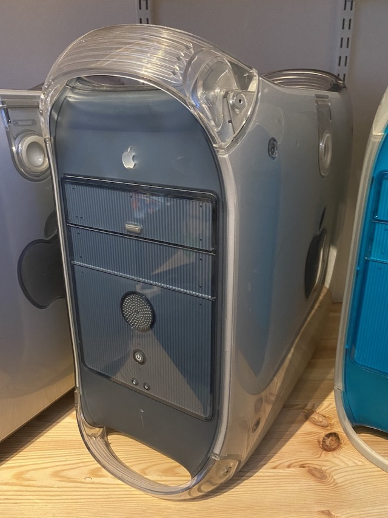

Power Mac G4 Graphite (1999)
Efter Power Mac G3 Blue & White kom en ny model med PowerPC G4. Denne lignede meget den tidligere model, men i mere afdæmpede farver.
- PowerPC G4 400 MHz processor
- 128 MB ram
- 20 GB harddisk
- CD-/DVD-drev
- Vægt: 13,6 kg
Læs mere på Wikipedia
Fortsæt turen
Kig til venstre •
Kig op •
Kig til højre